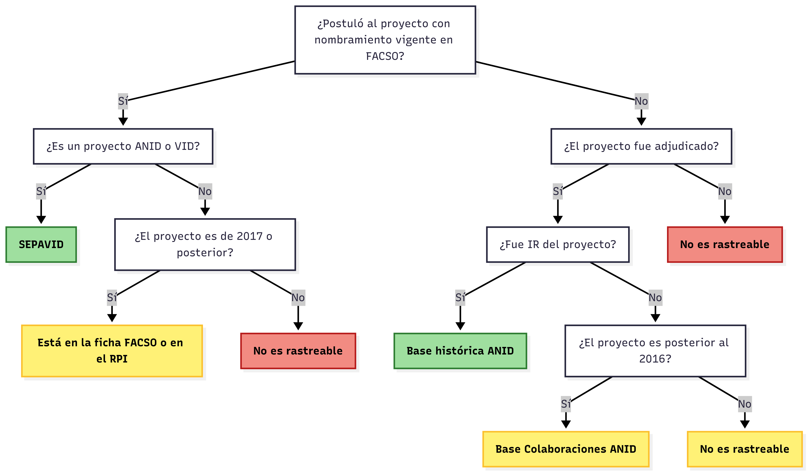

Gestión Información Científica
agosto, 2025
Contenidos
- Diagnóstico y Propósito
- Componentes de la Propuesta
- Base Integrada de Datos de Investigación
1. Diagnóstico y Propósito
Principales fuentes de información
Actualmente, el principal repositorio de datos de proyectos de investigación es SEPA-VID: Ofrece actualización periódica a partir de plataformas de concursos internos y externos, así como descarga masiva desde bases científicas.
Otras fuentes incluyen los repositorios de ANID, además de instrumentos internos de la Facultad: RPI, SIDRA, Colaboratorio
Además, se trabaja con otras fuentes con distintos tipos de información. Principalmente, la base de datos de funcionarios académicos de la Facultad.
Problemas identificados
La base de proyectos de SEPA-VID no incluye todos los proyectos vigentes y el ordenamiento está sujeto a cambios y errores.
La base de publicaciones no es eficiente para cubrir la diversidad de la producción científica de la Facultad.
Además, carece de libros de códigos y metadatos que faciliten su uso.
Capacidad limitada para trazar y analizar trayectorias de investigación del cuerpo académico
Carencia de una plataforma interna que articule los datos de investigación con otras dimensiones relevantes para la gestión académica – Jerarquizaciones, género, internacionalización.
Falta de sistematización y escasa capacidad para generar reportes integrados y actualizados sobre productividad académica.
Objetivo de la Propuesta
Desarrollar un sistema local e integrado de gestión, producción y visualización de información científica en la Facultad de Ciencias Sociales. Este sistema integrará, consolidará y mantendrá actualizados los datos relacionados a los proyectos de investigación de los académicos de la Facultad, tranformándolos en información confiable y oportuna para la comunicación y la toma de decisiones
Objetivos Específicos
Construir una base integrada de proyectos de investigación – incluyendo proyectos adjudicados y no-adjudicados – que permita reconstruir las trayectorias de investigación de los académicos de la Facultad.
Construir un sistema de visualización para gestión interna y difusión externa que ofrezca de manera eficiente y sintética reportes reproducibles sobre la investigación a nivel de la Facultad.
Consolidar un entorno de gobernanza de datos, que incluya documentación técnica, metadatos estandarizados y flujos de trabajos claros, que garanticen que los datos almacenados sean encontrables, accesibles, interoperables y reutilizables.
Integración con otros sistemas de la Facultad
| Plataforma/Sistema | Función | Nivel de la información | Público objetivo |
|---|---|---|---|
| Sistema de Datos DIP | Gestionar, producir y analizar datos sobre proyectos de investigación y trayectorias académicas | Individual y agregado | Interno (datos desagregados a nivel individual) Externo (datos agregados) |
| Colaboratorio | Difundir y reconocer las trayectorias de investigación de los académicos de la Facultad | Individual | Externo |
| SIDRA | Gestionar y reportar la distribución de responsabilidades académicas | Individual | Interno |
2. Componentes de la Propuesta
Componente 1: Bases de Datos
- Base integrada de datos de investigación
La base contendrá de manera integrada información sobre el académico, sobre el proyecto y sobre la trayectoria académica de los miembros de la Facultad
- Bases auxiliares
Además, la base estará acompañada de otros conjuntos de datos que complementarán la información de la Base Integrada. Estas incluyen:
- Base de datos de académicos retirados
- Base de datos de colaboraciones institucionales
- Base de datos de colaboración con académicos externos
- Base de datos de palabras claves
Alcance
Se incluirán en la Base Integrada:
Datos de postulaciones y proyectos de adjudicados por académicos con nombramiento vigente en la Facultad, ya sea como Investigadores Responsables o como Coinvestigadores.
Datos sobre proyectos adjudicados por académicos de la Facultad con anterioridad a su nombramiento en la Universidad.
Datos sobre proyectos no ingresados a SEPA-VID, registrados en el RPI, la Ficha FACSO u otras fuentes de información.
Factibilidad de inclusión de datos
Componente 2: Visualización
- Dashboards de uso interno
Aplicaciones sencillas que permitan responder de manera rápida consultas del Equipo de la Dirección. Propuesta
- Dashboards de uso externo
Plataforma de visualización pública con datos sintéticos sobre proyectos de investigación en la Facultad.
Componente 3: Documentación
Se incluirá documentación clara sobre la construcción de las bases de datos y los visualizadores, incluyendo libros de códigos y reportes técnicos.
Documentos disponibles
- Resumen del diagnóstico y la propuesta
- Descripción de la estructura de la base de datos integrada y propuesta de flujo para la actualización y el versionamiento de la base.
Repositorios de la Dirección
Todos los repositorio de la Dirección se encuentran en una organización de GitHub
La gestión de información de la Dirección se concentra en 4 repositorios
| Nombre del repositorio | Descripción | Acceso |
|---|---|---|
| DAI-FACSO | En este repositorio se presenta públicamente la propuesta, su diagnóstico y objetivo | Público |
| bases-datos-dip | Contiene base de datos originales y datos no anonimizados | Privado |
| datos-abiertos-dip | Contiene las bases de datos anonimizadas para uso público | Público |
| documentos-dai | Incluye documentación esencial, como libros de códigos y manuales de uso | Público |
3. Base Integrada de Datos de Investigación
Base de Datos Integrada
Las variables contenidas en la base de organizan en tres grandes grupos:
| Tipo de información | Variables |
|---|---|
| Información sobre los académicos | RUT; género; edad; departamento; jornada; jerarquía actual |
| Información sobre el proyecto | Código del proyecto; título del proyecto; institución, concurso e instrumento; rol del investigador; estado del proyecto; duración; año del concurso; monto adjudicado | |
| Datos sobre la trayectoria académica del investigador | Años en los que el académico accedió a una jerarquía dada; Jerarquía del académico al momento de adjudicarse el proyecto. |
La base se puede encontrar en dos versiones:
Base de datos sin anonimizar (con RUT):
base-datos-dipBase de datos anonimizada (sin RUT):
datos-abiertos-dip
Principios FAIR
| Principio | Aplicación |
|---|---|
| Encontrables | La base de datos anonimizada se encontrará disponible tanto en Github como en Zenodo. Esto otorgará a la base un DOI, lo que facilitará su identificación y referencia. |
| Accesibles | Se mantendrá una base de datos sin anonimizar para uso interno, con acceso restringido al equipo de la Dirección. La base de datos anonimizada estará disponible públicamente, con acceso abierto. |
| Interoperables | La base de datos se almacenará en formato de valores separados por comas (.csv), con codificación UTF-8 y encabezados claros |
| Reutilizable | La base de datos vendrá acompañada de una documentación completa y detallada, incluyendo un libro de código y un manual de uso. Se mantendrán metadatos detallados para guardar un historial de versiones, detallando cambios, autores y fechas. |
Metadatos
title: Datos de Investigación de la Facultad de Ciencias Sociales
creator: Dirección de Investigación y Publicaciones, Facultad de Ciencias Sociales,
Universidad de Chile
date: '2025'
identifier: TBD
url: https://github.com/facso-investigacion/bases-datos-dip
description: Esta propuesta tiene como objetivo desarrollar un sistema local e integrado
de gestión y visualización de información científica en la Facultad de Ciencias
Sociales. Este sistema permitirá consolidar, actualizar y utilizar estratégicamente
los datos de los proyectos de investigación, garantizando que sean encontrables,
accesibles, interoperables y reutilizables. Con ello, se busca mejorar la transparencia,
eficiencia y sostenibilidad en la gestión de la información científica de la Facultad.
subject: Gestión de Información Científica
format:
- .csv
- .rdata
license: TBD
language: es
relationship:
type: isPartOf
id: https://github.com/facso-investigacion
description: Parte de la Organización de la Dirección de Investigación en Github
source: Los datos fueron recopilados a partir de datos de SEPA-VID, ANID y FACSO
contact:
name: Dirección de Investigación FACSO
email: asistenteinvestigacion@facso.cl
phone: +56 2 2978 9728
historial_versiones:
- date: '2025-08-11'
message: Update metadata (HEAD -> main, origin/main, origin/HEAD)
author: gabcortes97Historial de versiones
- El versionamiento se hará a través de git, exportando los commits a un archivo de texto que se actualizará cada vez que se haga un commit.
- Este texto luego se procesa a través de un función para generar el archivo de metadatos
_metadata.ymlque se encuentra en la raíz del repositorio.
Ejemplo Flujo de Trabajo
1. Actualización postulaciones FONDECYT a partir del RPI
2. Actualización de _metadata.yml
El resultado se verá así:
historial_versiones:
- date: '2025-08-11'
message: Update metadata (HEAD -> main, origin/main, origin/HEAD)
author: gabcortes97
- date: '2025-08-11'
message: Crear master-script.R
author: gabcortes97
- date: '2025-08-05'
message: incluye postulaciones de IR fondecyt 2026
author: gabcortes97
- date: '2025-08-04'Reporte de problemas
Para reportar problemas o plantear sugerencias, se recomienda utilizar la herramienta Issues de GitHub.

DIP – FACSO